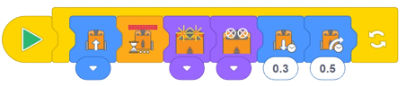

En esta actividad, los estudiantes exploran más formas de crear programas en EdBlocks que utilizan los sensores de luz infrarroja de Edison.
Esta actividad refuerza la comprensión de los estudiantes sobre las habilidades de detección de obstáculos
de Edison.
En esta actividad, los estudiantes crean un programa para que Edison evite un obstáculo una vez que
el robot detecta el obstáculo.
La actividad también desafía a los estudiantes a comenzar a utilizar la programación para la
resolución creativa de problemas.
• Puede ser útil revisar los componentes de Edison, enfatizando la ubicación de los LED y el sensor de luz infrarroja de Edison antes de que los estudiantes comiencen la actividad.
• Los obstáculos deben ser opacos pero no demasiado oscuros (por ejemplo, no negros) y al menos tan altos como Edison para que el robot los detecte.
• Anime a los estudiantes a desarrollar su aprendizaje previo buscando qué obstáculos pudo detectar Edison en la actividad 17.
1. Descubra más formas en que se utiliza la luz infrarroja en el mundo real.
Investigue diferentes dispositivos que usan luz infrarroja, cómo cada uno usa IR y qué beneficio
tienen los dispositivos para las personas o la comunidad.
2. Imagine diferentes formas en que los estudiantes podrían usar los sensores de infrarrojos de Edison para
crear soluciones para problemas en la escuela.
Por ejemplo, para actuar como sistema de alarma de monitor de pasillo si se detecta un obstáculo
(por ejemplo, una persona) cuando no debería haber nadie.
Tenga en cuenta: diferentes robots Edison viajarán a velocidades ligeramente diferentes, lo que puede hacer
que los estudiantes obtengan resultados ligeramente diferentes para las respuestas 1 y 2.
Las explicaciones en las respuestas 1 y 2 y todas las respuestas 3 son ejemplos de respuestas.
Los resultados de los estudiantes dependerán de sus experiencias.
1. 0,3 segundos. Esta vez fue suficiente para que Edison se alejara del objeto y tuviera suficiente espacio para girar.
2. 0,5 segundos. Este fue el tiempo suficiente para que Edison se alejara lo suficiente del objeto para no volver a toparse con él.
3.
